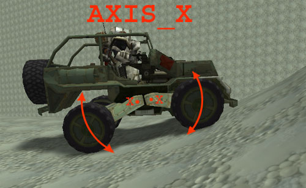
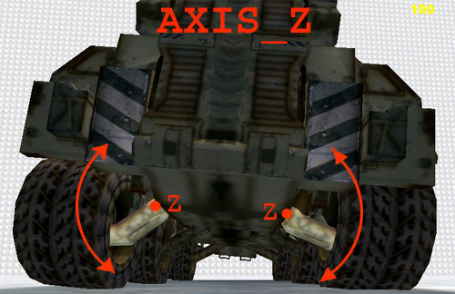

UDN
Search public documentation:
SVehicleReference
Interested in the Unreal Engine?
Visit the Unreal Technology site.
Looking for jobs and company info?
Check out the Epic games site.
Questions about support via UDN?
Contact the UDN Staff
SVehicle Reference
Create on 7/30/03 by Chris Linder (DemiurgeStudios?) for v2226.Updated on 8/15/03 by Chris Linder (DemiurgeStudios?), first public release. Update on 2005-04-05 by Michiel Hendriks, v3323 updates.
Related Documents
SVehicleCreation, SVehicleMayaMAXFix, KarmaReference, AnimBrowserReference, KarmaCarCreation, KarmaCars, HotRodIntro
SVehicles (sometimes call skeletal vehicles) are a different type of Karma vehicle than KVehicles. The main difference between SVehicles and KVehicles is that SVehicles are made of skeletal meshes as opposed to static meshes. Because the meshes are animated, SVehicles can include things like tires and moving gun turrets in the single mesh for the vehicle. Previously, with KVehicles, any moving part has to be a separate mesh and a separate object. The moving parts of an SVehicle, like tires and turrets, can be moved by setting the rotation of the bone that influences them. This movement does not affect the world however. (For example, even if you attach a Karma collision volume to a bone that rotates, the collision volume will not rotate.) Instead of simulating each wheel as a different physical object, SVehicles treat each wheel as an abstract point contact with the ground. The rotation of the tires (the parts of the mesh that look like tires) is synced with the rotation of the wheels (the abstract point contact with the ground). The rotation of the tires does not actually effect the movement of the vehicles; it is only the wheels that matter. Another advantage of SVehicles is that they are less computationally intensive because they do not require multiple simulated objects for moving parts. Here is what James Golding (Epic's main man on Karma) has to say about SVehciles vs. KVehicles:Subject: SVehicle "feeling" Well, SVehicles do work in a very different way to KVehicles, so they will feel a bit different. They don't have actual wheels per se you don't get quite the same monster-truck feeling. But playing with the suspension travel, softness and penscale should let you get quite a good range of 'feel'! SVehicles are better because: 1) They take less CPU to simulate. 2) The art pipeline is easier because they are just one mesh. 3) They reduce the number of actors in the level. 4) They use less network bandwidth. 5) The code is much simpler (no big setup functions to spawn wheels, no complex net pack/unpack). 6) They allow more control over the 'wheel'/ground interaction. 7) They allow weighted skinning for suspension parts etc. 8) Shadow projectors work properly. James
Code Changes
There are a couple code changes you need to make to a stock 2226 build before SVehicles will work as well as they can. This is not needed for 3323 and up, since all changes are in place. SVehicles are ticked twice. The second ticked can be skipped which is discussed in this unprog post. If you want to make vehicles in 3D Studio MAX, or you want to make suspension and wheels rotate on non-orthogonal axes, you will need this fix; SVehicleMayaMAXFix.SVehicle Concepts
Skeletons
SVehicles use a skeleton to control which parts of the mesh move and rotate. For more details on a creating SVehicles and their skeletons, see the SVehicle Creation Document.Rigidize
In general, animated meshes render slower than static meshes which is a concern when making highly detailed vehicles. Fortunately, there is a way to make parts of animated meshes render as fast as static meshes if these parts are only influenced by one bone. This is called "Rigidize" and is explained more fully in the Animation Browser Reference.Collision Volumes
SVehicles need collision volumes to work. You can not, however, import collision information in the manner of static meshes. This means you have to use the animation browser to add collision after you have imported the mesh. See the Animation Browser Reference for more details on adding collision. You can use more than one collision volume but it is a good idea to keep the number of collision volumes as small as possible. It is also good for the collision volume to be large enough that when the vehicle hits a wall, a collision volume collides before the center of any wheel collides.Center of Mass
The center of mass of an SVehicle is located at the origin of the mesh. This is the (0,0,0) point in the 3D modeling program and the animation browser. Neither the shape of the mesh nor the collision volume(s) affect the center of mass at all. The center of mass can be moved in 3 ways. First, move the mesh in the 3D modeling program. Second, move the mesh with the Translation offset in the "Mesh" category of the Mesh tab in the Animation Browser. Both of these options affect all instances of the SVehicle using the given mesh. (Remember to save the package before trying to see your changes though.) Third, you can adjust the KCOMOffset in KarmaParamsRBFull, in the "KParams", in the "Karma" category of the properties of the individual car. This change will only apply to the one SVehicle you change.Rotational Inertia
The rotational inertia of the SVehicle is determined by KInertiaTensor in KarmaParamsRBFull. The rotational inertia is not affected by the collision volume(s) or by the shape of the mesh. This means you should tweak the KInertiaTensor for each new mesh you make so that the rotational inertia matches what the vehicle looks like.Editable SVehicle Variables
Camera
The variables below are used to configure how the camera works and what is drawn.bDrawMeshInFP
var (Vehicle) bool bDrawMeshInFP
bDrawMeshInFP does not work. If it did work, it would be whether to draw the vehicle mesh when in 1st person mode.
bDrawDriverInTP
var (Vehicle) bool bDrawDriverInTP
Whether to draw the driver when in 3rd person mode.
bZeroPCRotOnEntry
var (Vehicle) bool bZeroPCRotOnEntry
If bZeroPCRotOnEntry is true, the camera rotation is set to zero on entering the vehicle. If false, set the camera rotation to the vehicle rotation.
FPCamPos
var (Vehicle) vector FPCamPos
FPCamPos is the position of the camera relative to the vehicle when driving in first person.
TPCamLookat
var (Vehicle) vector TPCamLookat
This is the point for the third person camera to look at. This point is relative to the vehicle.
TPCamDistance
var (Vehicle) float TPCamDistance
TPCamDistance is the distance to slide the camera back from TPCamLookat. The camera will collide with obstructions starting at TPCamLookat. Replaced by TPCamDistRange in v3323 and up.
TPCamDistRange
var (Vehicle) Range TPCamDistRange
Replaced TPCamDistance. Gives a range for the distance of the TP camera, this grants the user some freedom in the distance setting of the camera (PC.CameraDist / PC.CameraDistRange.Max defines the position in the range to select). (v3323).
TPCamWorldOffset
var (Vehicle) vector TPCamWorldOffset
Applied to the TP camera when the world position has been calculated based on the TPCamLookat value. This is usually used to change the Z. (v3323)
MaxViewYaw
var (Vehicle) int MaxViewYaw
This is the maximum amount you can look left and right in first person. So for example if this were 16384 (90 degrees), you could look 90 degrees to the left and to the right for a total of 180 degrees of view. This is sort of odd because if you move your mouse left and hit the max, and then you keep moving your mouse left, the view will not change but if you move your mouse a little to the right, the view will not move to the right. You have to make up the distance you moved the mouse past the edge before you can start looking right.
MaxViewPitch
var (Vehicle) int MaxViewPitch
This is not used. If it where, it would be the maximum amount you can look up and down in first person.
Driver
These are variables that effect how the driver gets in and out of the vehicle and how the driver is configured when inside the vehicle.bDriverCollideActors
var (Vehicle) bool bDriverCollideActors
If driver is drawn in vehicle, is Driver.bCollideActors true ? but the joke is on you, this variable isn't used.
bFPNoZFromCameraPitch
var() bool bFPNoZFromCameraPitch
Ignore any vehicle-space Z due to FPCamViewOffset, so looking up and down doesn't change camera Z rel to vehicle.
bHighScoreKill
var() bool bHighScoreKill
The vehicle is considered important, and awards 5 points upon destruction. It's not used for vehicles itself, just by a gametype.
bHUDTrackVehicle
var(Vehicle) bool bHUDTrackVehicle
Another gameplay property that has no meaning for the usage of the vehicle. If true, Vehicle will tracked on the HUD\Rader.
bRelativeExitPos
var (Vehicle) bool bRelativeExitPos
Defined if the ExitPositions are relative to the vehicles position, or world absolete. If set to false the player will exit at the world position where it entered the vehicle. this can be very usefull in cases where player has to enter the vehicle from a point way of from the vehicle (teleportation to the cockpit).
DrivePos
var (Vehicle) vector DrivePos
DrivePos is the position relative to the vehicle to put the player pawn while driving. Note that this does not effect the first person camera position (see FPCamPos).
DriveRot
var (Vehicle) rotator DriveRot
This is the rotation relative to the vehicle to put driver while driving.
DriveAnim
var (Vehicle) name DriveAnim
DriveAnim is not used. If it were, it would be the name of the animation for the pawn to play while driving.
ExitPositions
var (Vehicle) array<vector> ExitPositions
These are the positions relative to the vehicle to try putting the player when exiting. If all the exit positions are blocked, the player does not exit and continues to control the vehicle. (v3323 only)
EntryPosition(s)
v3323
var (Vehicle) vector EntryPosition
In v3323 and later there is only one entry position. Togther with EntryRadius it will determine from where a player can enter the vehicle. EntryPosition is the offset from the pivot where the player can enter the vechile. It's probably best to set it to the cockpit.
v2226
var (Vehicle) array<vector> EntryPositions (v2226)
These are the positions relative to the vehicle to create points of entry. The points of entry are SVehicleTriggers and show up as sprites with the AI script texture. Despite the name, these are not triggers but are in fact a subclass of AIScript. They work by pressing the "use" key when you are within the collision cylinder of the SVehicleTriggers.
EntryRadius
var (SVehicle) array EntryPositions
The radius from the EntryPosition where the player can enter the vehicle. This defines the area around the EntryPosition that should be considered a player where the player can enter the vehicle.
FPCamViewOffset
var (Vehicle) vector FPCamViewOffset
Offset in reference frame of camera.
MaxViewYaw
var (Vehicle) int MaxViewYaw
Maximum amount you can look left and right
MaxViewPitch
var (Vehicle) int MaxViewPitch
Maximum amount you can look up and down
Physics
Below are properties that define some of the physics of this vehicle.VehicleMass
var (SVehicle) float VehicleMass
This is the mass of the vehicle which includes the wheels. If the vehicle is too heavy it will jitter very oddly, and if it lands upside-down, it will also sink through the ground. The mass of the vehicle is centered around the Center of Mass of the vehicle.
Wheels
var (SVehicle) editinline export array<SVehicleWheel> Wheels
This is an array of SVehicleWheels that are the wheels for this vehicle. Vehicles do not need to have wheels, HoverBike has none for example, but they can. The SVehicleWheels in this Wheels array define many of the properties of the vehicle and include information about how the wheels are configured based on the bones of the mesh.
Effects
DestroyEffectClass
var (SVehicle) class<Actor> DestroyEffectClass
DestroyEffectClass is the effect spawned when the vehicle is destroyed. The effect is spawned at the location of the vehicle with the rotation of the vehicle.
BulletSounds
var() array<sound> BulletSounds
Sounds to use for bullets hitting the vehicle.
WaterDamage
var() float WaterDamage
Amount of damage to gain when the vehicle is in the water.
Flipping
When a vehicle gets upside-down it can be flipped. The variables below control various aspects of the flipping. Vehicles can only be flipped if theirbCanFlip property is set to true (not editable).
FlipTime
var (SVehicle) float FlipTime
Flip duration. For this duration the flip force will be applied. A vehicle can not be flipped again until this time runs out.
FlipTorque
var (SVehicle) float FlipTorque
The force to apply to flip the vehicle. This should be enough to get flip the vehicle to the right position when it's upside-down.
Controls
These variables are how SVehicles access user input; you are not supposed to change these values. Because SVehicles are pawns and do not have direct access to input from the user, these variables give SVehicles the input they need. This scheme also allows the keys or buttons the user pushes to be changed on a higher level without changing the implementation of an SVehicle.Steering
var (SVehicle) float Steering
Steering is the input for steering and ranges between -1, which is all the way to the right, and 1 which is all the way to the left. This variable is only the input from the controller and does not reflect the actual state of the wheels.
Throttle
var (SVehicle) float Throttle
Throttle is the input for the throttle and ranges between -1 and 1 where -1 is reverse and 1 is forward. This variable is only the input from the controller and does not reflect the actual direction of the vehicle.
Rise
var (SVehicle) float Rise
Rise is the input for the going up and down in flying vehicles. 1 is go up and -1 is go down. This variable is only the input from the controller and does not reflect the actual direction of the vehicle.
SVehicleWheel
SVehicleWheel is the class that contains the code for simulating wheels as point contacts with the ground. Instead of simulating each wheel as a different physical object, SVehicles treat each wheel as an abstract point contact. This is done by sending out a line check from the center of the wheel towards the ground. The rotation of the tires (the parts of the mesh that look like tires) is synced with the rotation of the wheels (the abstract point contact with the ground). The rotation of the tires does not actually effect the movement of the vehicles which can be seen when the syncing of tires is not perfect. SVehicleWheel deals not only with the simulation of the physics for wheel itself but also with the simulation of suspension for attaching the given wheel to a vehicle. This includes linking the wheel to a tire (the part of the mesh) and to a "support".Bone Attachment
BoneName
var() name BoneName
This is the name of the bone to attach this wheel to. The given bone will be rotated as this wheel turns. The vertices of the tire in the mesh should be set up to be influenced entirely by this bone so the tire will turn as the wheel turns.
BoneRollAxis
var() EAxis BoneRollAxis
Note: this variable is not in a stock 2226 build, but does exist in 3323; you must include the changes described in the SVehicleMayaMAXFix document.
BoneRollAxis is the axis around which this wheel rotates for normal rolling movement. If you have imported a model from Maya, in most cases you will set this to AXIS_X. If you imported a model from 3DS MAX, in most cases you will set this to AXIS_Y.
BoneSteerAxis
var() EAxis BoneSteerAxis
Note: this variable is not in a stock 2226 build, but does exist in 3323; you must include the changes described in the SVehicleMayaMAXFix document.
BoneSteerAxis is the axis around which this wheel rotates for steering. If you have imported a model from Maya, in most cases you will set this to AXIS_Y. If you imported a model from 3DS MAX, in most cases you will set this to AXIS_Z.
BoneOffset
var() vector BoneOffset
BoneOffset is the offset from the wheel bone to the line check point which should be in the middle of tire. If the wheel bone specified by BoneName is in the middle of the tire in the mesh, you will not need to change this value. Note: this value is not affected by draw scale so if you adjust draw scale you will need to also adjust BoneOffset manually.
SupportBoneName
var() name SupportBoneName
SupportBoneName is the name of the bone that will be rotated when the wheels go up and down. This is used to make the suspension in the mesh react to the changing positions of the wheels. In most cases this bone will have 100% influence over part of the suspension and no influence on anything else. See SupportBoneAxis for more information about the axes of rotation.
SupportBoneAxis
var() EAxis SupportBoneAxis
SupportBoneAxis is the local axis about which to rotate the bone given by SupportBoneName. The axis you should choose depends on the orientation of the bone in the modeling program. If you are using Maya and use the default bone orientations, the images below will illustrate different bone axis choices:
AXIS_X - rotation axis going into the page, vehicle seen from side, front strut compressed, rear strut uncompressed

AXIS_Z - rotation axis going into the page, vehicle seen from back, right strut compressed, left strut uncompressed
Configurable Wheel Properties
When making a new SVehicle or importing a new model for an existing SVehicle, you should configure these values (except maybe ChassisTorque and WheelInertia) for each wheel.WheelRadius
var() float WheelRadius
This is the length of line check for wheel collision. This value determines the real value of the radius of the wheel. The size of the tire in the mesh does not matter. It looks best if these two values sync up though. Note: this value is not affected by draw scale so if you adjust draw scale you will need to also adjust WheelRadius manually.
bPoweredWheel
var() bool bPoweredWheel
bPoweredWheel does not work. If it did, you would set bPoweredWheel to true if this is a wheel the engine spins. For example in a rear wheel drive car, bPoweredWheel would be set to true for the rear wheels and false for the front wheels.
bTrackWheel
var() bool bTrackWheel
If this is true, the wheel is treated as part of a track segment instead of a normal wheel. Tracks are for things like tanks for example.
bHandbrakeWheel
var() bool bHandbrakeWheel
If this is true, this wheel will have its slip and friction changed when the handbrake is on. In general, this is set to true for rear wheels which will have their friction reduced and the slip increased so that the back of the vehicle will spin around more easily, as if the handbrake in a car had been pulled. See HandbrakeFrictionFactor and HandbrakeSlipFactor.
SteerType
var() enum ESteerType
{
ST_Fixed,
ST_Steered,
ST_Inverted
} SteerType
SteerType is how steering affects this wheel. If the wheel is set to ST_Fixed, the wheel will not steer the vehicle, it will always point forward. ST_Steered is like the front wheels on a normal car. ST_Inverted is used for rear wheel steering. Rear wheel steering is when the rear wheels turn in the opposite direction of normal steering wheels. This still turns the car in the correct direction but it drives very differently. If you want four wheel steering, set the front wheels to ST_Steered and the rear wheels to ST_Inverted.
ChassisTorque
var() float ChassisTorque
ChassisTorque is the torque applied back to the chassis (equal-and-opposite) from this wheel. This value is overridden in some subclasses of SVehicle, for example in SCar in void ASCar::UpdateVehicle(FLOAT DeltaTime).
WheelInertia
var() float WheelInertia
WheelInertia is the inertia of this wheel. The larger this number is, the harder it will be both to stop and start this wheel spinning. Large values for this number will also cause the chassis of the vehicle to be torqued more by the wheels (see also ChassisTorque). There are some cases where wheel inertia behaves very oddly. The most problematic is when the inertial is large and you brake, the car will come to stop before the wheels stop spinning. The larger the inertia and the lower the brake power the more obvious this problem is; you can have all the wheels of the car spinning on the ground while the car is stopped for several seconds. The wheels while however change speed instantly is few cases. When you change from any forward gear to reverse or visa versa, the wheels will stop instantly. This change in motion will not torque the chassis at all. Note that WheelInertia is overridden by the variable WheelInertia in SCar and by the variable TrackInertia in SHalfTrack.
Suspension
These variables affect the suspension of the wheeled SVehicle. In most cases you do not set these values directly because they are overridden in some subclasses of SVehicle, for example in SCar insimulated event SVehicleUpdateParams().
Softness
var() float Softness
This is the "softness" for the suspension of this wheel. The larger this number is the more the suspension will compress. Setting Softness to zero, however, does not prevent the suspension from compressing. Softness is used mostly for when the car turns and the weight shifts from one side to the other. See SuspensionTravel for more details on turning suspension. Softness also seems to be a measure of forgivingness of the suspension; if there is no softness the car will drive more roughly. A reasonable value for softness is 0.01.
PenOffset
var() float PenOffset
Allows you to change the contact penetration position. This value is subtracted from the SuspensionPosition. Note that this value is not corrected with the K_U2MEScale, so the value is the real Karma value instead of the Unreal value.
PenScale
var() float PenScale
This is the penetration scale of the suspension of this wheel. This number will scale how stiff the suspension is. If this number is less than 1.0, the suspension will be squishier and have more travel. The wheels will interpenetrate with the chassis more. If this value is 0, the wheels will be entirely pushed into the chassis when a bump is hit. If this number is larger than 1.0, the suspension will be stiffer and interpenetrate with the chassis less. If this value is very large, 100 for example, the car will bounce into the air as soon as a wheel touches the ground. 1.0 is reasonable value for this PenScale. Note that value primarily affects forces on the wheels from going over bumps, not from turning.
SuspensionTravel
var() float SuspensionTravel
SuspensionTravel affects the suspension of this wheel when turning. The larger this number is the more the vehicle will list from side to side while turning. This value works with Softness so if either are too small you will not be able to see the effect of the other.
SuspensionOffset
var() float SuspensionOffset
This is the vertical offset of the suspension. This is the number of unreal units to offset the initial position of the wheels by. Positive number will make the wheels closer to the car (more like a sports car) while negative numbers will make the wheels further below the car (like a monster truck).
SuspensionMaxRenderTravel
var() float SuspensionMaxRenderTravel
Sets the maximum value for the SuspensionPosition. Using this value the suspension bone will be limited in the rotation.
Friction
These variables affect the friction of wheels of the SVehicle. In most cases you do not set these values directly because they are overridden in some subclasses of SVehicle, for example in SCar invoid ASCar::UpdateVehicle(FLOAT DeltaTime).
LongFriction
var() float LongFriction
LongFriction is the current linear longitudinal (in the direction of roll) friction force. This value is overridden in some subclasses of SVehicle, for example in SCar in void ASCar::UpdateVehicle(FLOAT DeltaTime) based on LongFrictionFunc.
LatFriction
var() float LatFriction
This is the current linear lateral (perpendicular to the direction of roll) friction force. This value is overridden in some subclasses of SVehicle, for example in SCar in void ASCar::UpdateVehicle(FLOAT DeltaTime).
LongSlip
var() float LongSlip
LongSlip is the current longitudinal slip (in the direction of roll) for this wheel. For more details on slip, see the KCar section of KarmaCarCreation. This value is overridden in some subclasses of SVehicle, for example in SCar in simulated event SVehicleUpdateParams().
LatSlip
var() float LatSlip
LatSlip is the current lateral slip (perpendicular to the direction of roll) for this wheel. For more details on slip, see the KCar section of KarmaCarCreation. This value is overridden in some subclasses of SVehicle, for example in SCar in void ASCar::UpdateVehicle(FLOAT DeltaTime) based on LatSlipFunc.
LongFrictionFunc
var() InterpCurve LongFrictionFunc
This is the longitudinal (in the direction of roll) friction curve. The input of this curve is the difference in linear velocity between the ground and the wheel at the point of contact. It is best to start this curve with (0,0) because otherwise the wheels and engine will jump, jiggle, and oscillate. It is worth noting that the input to this curve, the slip velocity, is not exclusively in the direction of wheel's roll but in any direction. LatSlipFunc
var() InterpCurve LatSlipFunc
This is the lateral (perpendicular to the direction of roll) slip curve. For more details on slip, see the KCar section of KarmaCarCreation. The input to this curve is either the rotational velocity of the wheel in radian per second or, if bTrackWheel is true, the linear velocity of 'track' at this wheel in unreal units. The larger slip is, the more the wheels will slide sideways when turning. This makes it harder to turn but also harder to flip while turning.
HandbrakeFrictionFactor
var() float HandbrakeFrictionFactor
HandbrakeFrictionFactor is a multiplier for the lateral friction of those tires with bHandbrakeWheel set to true. In most cases you want to set this less than 1.0 so that the handbrake wheels slide more when the handbrake is on.
HandbrakeSlipFactor
var() float HandbrakeSlipFactor
HandbrakeSlipFactor is a multiplier for the lateral slip of those tires with bHandbrakeWheel set to true. In most cases you want to set this larger than 1.0 so that the handbrake wheels slip more when the handbrake is on.
Wheel Drive State
These variables represent the current state of driving and steering. Settings these values actually determine how far the wheel is turned and how much force the current wheel is exerting. In most cases, these variables are set every tick by a concrete derived class of SVehicle such as SCar.Steer
var() float Steer
Steer is the current steering angle of this wheel in degrees. This value is set in some subclasses of SVehicle, for example in SCar in void ASCar::UpdateVehicle(FLOAT DeltaTime).
DriveForce
var() float DriveForce
This is the resultant linear driving force at wheel center. This value is set in some subclasses of SVehicle, for example in SCar in void ASCar::UpdateVehicle(FLOAT DeltaTime).
TrackVel
var() float TrackVel
TrackVel is the linear velocity of 'track' at this wheel (unreal scale). This value is set in some subclasses of SVehicle, for example in SHalfTrack in void ASHalfTrack::UpdateVehicle(FLOAT DeltaTime).
Not So Useful
Restitution
var() float Restitution
This doesn't seem to do anything.
Adhesion
var() float Adhesion
This doesn't seem to do anything.
bLeftTrack
var() bool bLeftTrack
Not used.
HandbrakeFrictionFactor
var() float HandbrakeFrictionFactor
Unused variable.
HandbrakeFrictionFactor
var() float HandbrakeFrictionFactor
Does absolutely nothing.